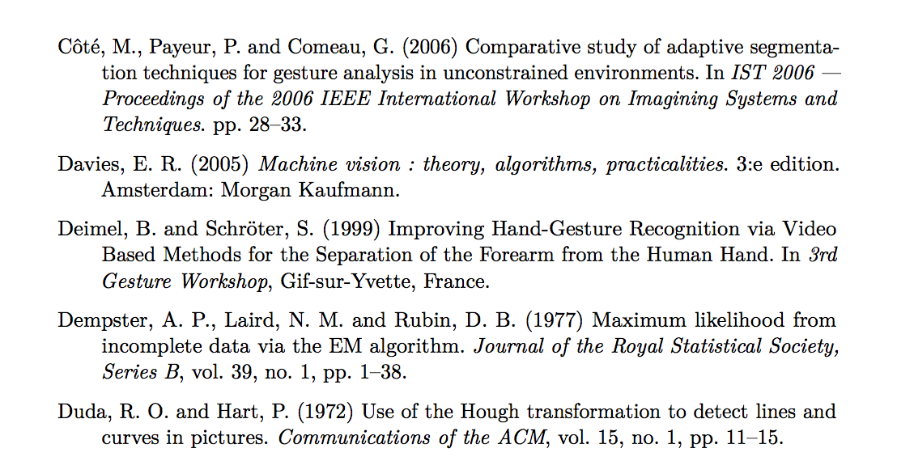

LaTeX is an excellent typesetting tool mainly used by (but absolutely not restricted to) the academic world. Along with tools like BibTeX (for reference management) and AMS-LaTeX (for excellent math typesetting), LaTeX makes and excellent platform with which documents can be beautifully typeset with ease.
LaTeX is also very extensible; both packages (for added functionality) and document classes (for change of style) are available to extend and improve the already great suite. Most of these packages and classes are available on the Comprehensive TeX Archive Network (CTAN), and can be easily installed by tools such as TeX Live’s tlmgr.
Below you will find some of the packages and classes I have hacked (I stress hacked) together by me, mainly for personal use but also for use by others, mainly student at Chalmers University of Technology in Göteborg, Sweden. None of these are currently available on CTAN, but they are available from my LaTeXhax Mercurial repository on Bitbucket. Feel free to report any bugs you find using the issue tracker provided by Bitbucket, and I might fix them when I have time. You’re also welcome to fork my work or provide patches.
I cannot give you any support when it comes to installing these files, instead referring you to an excellent wikibook on the subject.
skrapportThe skrapport document class is an attempt to provide a good-looking, compact alternative to the standard article class. It is designed to be fully compatible with the article class, meaning you should be able to simply replace the \documentclass declaration in the preamble of your documents should you decide to use this class instead.
Most notably it defines the \maketitle command to typeset your title in a more compact manner. As shown by the image below, the title and author name is left-justified, immediately followed by the abstract (if available). Note also that section titles aren’t boldface by default (although there is an option controlling this).
The class also loads some packages by default; hyperref and babel being the most notable ones. By default, babel is loaded with swedish settings, but this can be changed to english by providing an option — this is because the class is designed for use at Chalmers, where the only languages used are swedish and english; swedish being used in most undergraduate courses. See the package documentation for more information.
Additionally, the package sets up LaTeX with paragraph spacing, much like the parskip package, as shown below. This is because short paragraphs are likely to be present in short reports, and these look much better with spacing rather than indentation.

chsciteThe library at Chalmers University of Technology has published a set of recommendations of style regarding references (in swedish), which up until now has been hard to implement when using LaTeX. This package intends to make following those recommendations much easier — simply include the package, use BibTeX for reference management, and off you go!
The package automatically identifies wether you’re writing in swedish or english, and conforms accordingly. Shown below is a sample in english, containing some of the articles I happened to have in my BibTeX database.

As you can see, the library recommendations are based on the Harvard system. Accordingly, the chscite package contains tools for in-text referencing using the Harvard system (shamelessly stolenborrowed from the harvard package), enabling you to cite regularly, as a noun, and so on. See the package documentation (and that of the harvard package) for further details.